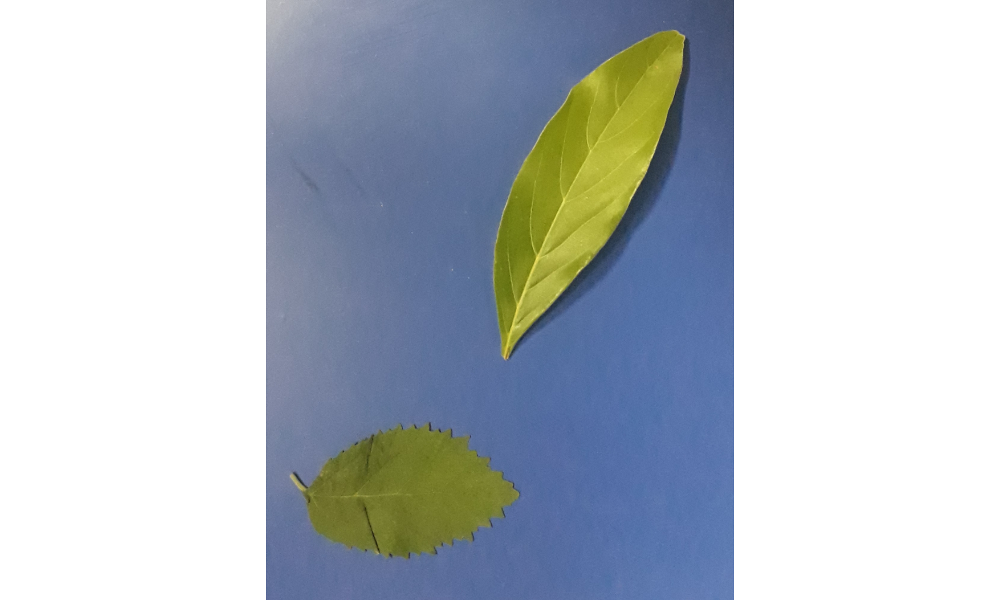
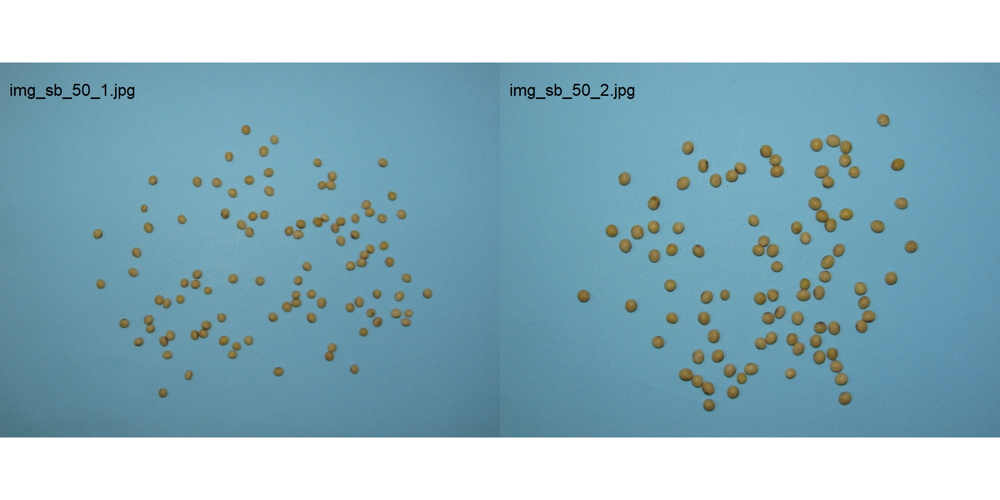
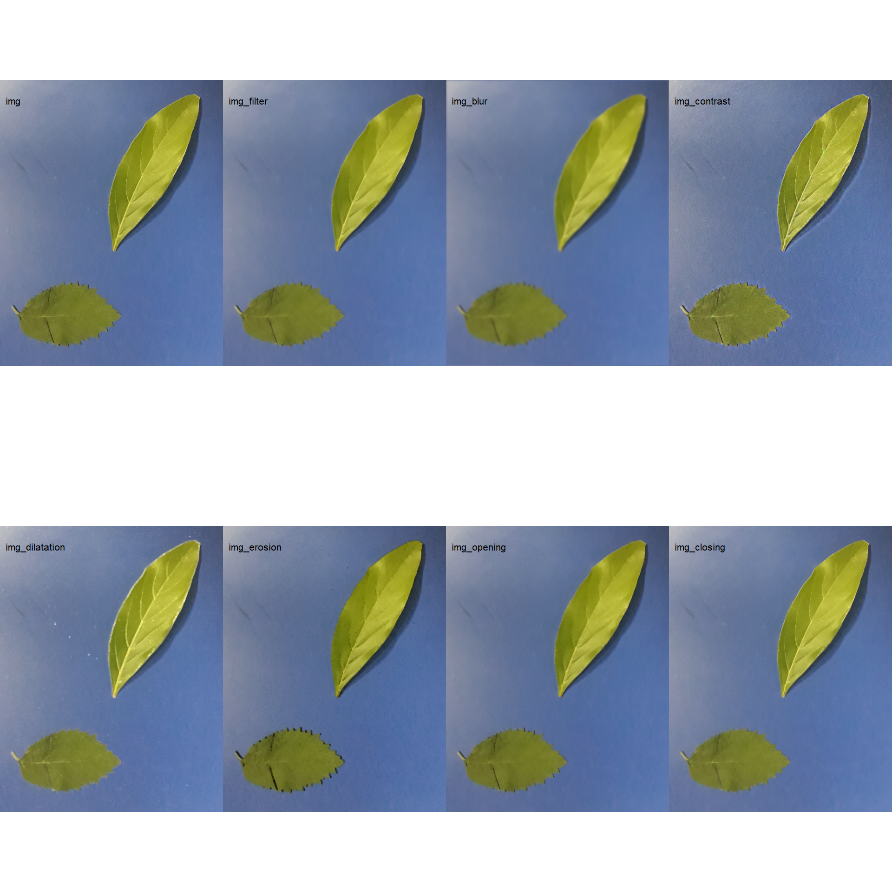

setwd("E:/Desktop/UFSC/cursos/pliman_tut/imgs")Import and manipulate
1 Directory
2 Import images
To import a list of images, use a vector of image names, or the pattern argument. In the latter, all images that match the pattern name are imported into a list.
img_list1 <- image_import(c("img_sb_50_1.jpg", "img_sb_50_2.jpg"))
img_list2 <- image_import(pattern = "img_sb_")
str(img_list2)List of 13
$ img_sb_50_1.jpg :Formal class 'Image' [package "EBImage"] with 2 slots
.. ..@ .Data : num [1:816, 1:612, 1:3] 0.365 0.361 0.361 0.349 0.365 ...
.. ..@ colormode: int 2
.. ..$ dim: int [1:3] 816 612 3
$ img_sb_50_10.jpg:Formal class 'Image' [package "EBImage"] with 2 slots
.. ..@ .Data : num [1:816, 1:612, 1:3] 0.42 0.408 0.416 0.416 0.416 ...
.. ..@ colormode: int 2
.. ..$ dim: int [1:3] 816 612 3
$ img_sb_50_11.jpg:Formal class 'Image' [package "EBImage"] with 2 slots
.. ..@ .Data : num [1:816, 1:612, 1:3] 0.388 0.38 0.384 0.38 0.369 ...
.. ..@ colormode: int 2
.. ..$ dim: int [1:3] 816 612 3
$ img_sb_50_12.jpg:Formal class 'Image' [package "EBImage"] with 2 slots
.. ..@ .Data : num [1:816, 1:612, 1:3] 0.38 0.376 0.392 0.384 0.392 ...
.. ..@ colormode: int 2
.. ..$ dim: int [1:3] 816 612 3
$ img_sb_50_13.jpg:Formal class 'Image' [package "EBImage"] with 2 slots
.. ..@ .Data : num [1:816, 1:612, 1:3] 0.392 0.392 0.412 0.384 0.4 ...
.. ..@ colormode: int 2
.. ..$ dim: int [1:3] 816 612 3
$ img_sb_50_2.jpg :Formal class 'Image' [package "EBImage"] with 2 slots
.. ..@ .Data : num [1:816, 1:612, 1:3] 0.376 0.384 0.392 0.388 0.396 ...
.. ..@ colormode: int 2
.. ..$ dim: int [1:3] 816 612 3
$ img_sb_50_3.jpg :Formal class 'Image' [package "EBImage"] with 2 slots
.. ..@ .Data : num [1:816, 1:612, 1:3] 0.369 0.376 0.361 0.361 0.365 ...
.. ..@ colormode: int 2
.. ..$ dim: int [1:3] 816 612 3
$ img_sb_50_4.jpg :Formal class 'Image' [package "EBImage"] with 2 slots
.. ..@ .Data : num [1:816, 1:612, 1:3] 0.4 0.408 0.404 0.396 0.392 ...
.. ..@ colormode: int 2
.. ..$ dim: int [1:3] 816 612 3
$ img_sb_50_5.jpg :Formal class 'Image' [package "EBImage"] with 2 slots
.. ..@ .Data : num [1:816, 1:612, 1:3] 0.396 0.404 0.396 0.396 0.388 ...
.. ..@ colormode: int 2
.. ..$ dim: int [1:3] 816 612 3
$ img_sb_50_6.jpg :Formal class 'Image' [package "EBImage"] with 2 slots
.. ..@ .Data : num [1:816, 1:612, 1:3] 0.4 0.38 0.396 0.384 0.388 ...
.. ..@ colormode: int 2
.. ..$ dim: int [1:3] 816 612 3
$ img_sb_50_7.jpg :Formal class 'Image' [package "EBImage"] with 2 slots
.. ..@ .Data : num [1:816, 1:612, 1:3] 0.349 0.361 0.365 0.365 0.373 ...
.. ..@ colormode: int 2
.. ..$ dim: int [1:3] 816 612 3
$ img_sb_50_8.jpg :Formal class 'Image' [package "EBImage"] with 2 slots
.. ..@ .Data : num [1:816, 1:612, 1:3] 0.361 0.373 0.376 0.388 0.384 ...
.. ..@ colormode: int 2
.. ..$ dim: int [1:3] 816 612 3
$ img_sb_50_9.jpg :Formal class 'Image' [package "EBImage"] with 2 slots
.. ..@ .Data : num [1:816, 1:612, 1:3] 0.373 0.365 0.373 0.384 0.392 ...
.. ..@ colormode: int 2
.. ..$ dim: int [1:3] 816 612 33 Displaying imagens
Individual images are displayed with plot(). To combine images, the image_combine() function is used. Users can enter a comma-separated list of objects or a list of objects of the Image class.
# Imagens individuais
plot(img)
# Combine imagens
image_combine(img_list1)
pliman provides a set of image_*() functions to perform image manipulation and transformation of unique images or an image list based on EBImage package.
4 Resize an image
Sometimes resizing high-resolution images is necessary to reduce computational effort and processing time. The image_resize() function is used to resize an image. The rel_size argument can be used to resize the image by relative size. For example, setting rel_size = 50 for an image of width 1280 x 720, the new image will have a size of 640 x 360.
image_dimension(img)
----------------------
Image dimension
----------------------
Width : 783
Height: 1005 img_resized <- image_resize(img, rel_size = 50)
image_dimension(img_resized)
----------------------
Image dimension
----------------------
Width : 392
Height: 502 5 Image resolution (DPI)
The dpi() function executes an interactive function to calculate the image resolution given a known distance entered by the user. To calculate the image resolution (dpi), the user must use the left mouse button to create a line of known distance. This can be done, for example, using a model with known distance, as follows.
# this only works in an interactive section
rule <- image_import("rule.jpg", plot = TRUE)
(dpi <- dpi(rule))
rule2 <-
image_crop(rule,
width = 130:1390,
height = 582:1487,
plot = TRUE)
analyze_objects(rule2,
watershed = FALSE,
marker = "area") |>
get_measures(dpi = 518) |>
plot_measures(measure = "area", vjust = -100, size = 2)6 Filter, blur, contrast, dilatation, erosion, opening, and closing
img_filter <- image_filter(img)
img_blur <- image_blur(img)
img_contrast <- image_contrast(img)
img_dilatation <- image_dilate(img)
img_erosion <- image_erode(img)
img_opening <- image_opening(img)
img_closing <- image_closing(img)
image_combine(img,
img_filter,
img_blur,
img_contrast,
img_dilatation,
img_erosion,
img_opening,
img_closing,
ncol = 4)
7 Export
To export images to the current directory, use the image_export() function. If an image list is exported, the images will be saved considering the name and extension present in the list. If no extension is present, images will be saved as *.jpg files.
image_export(img, "imgs/img_exported.jpg")
# ou subpasta
image_export(img, "imgs/test/img_exported.jpg")